Mini pirate ship. Designed 2019, not knowing that 2020 would be such a pirate year! ;)
Instructions (includes part list)
Rendered images
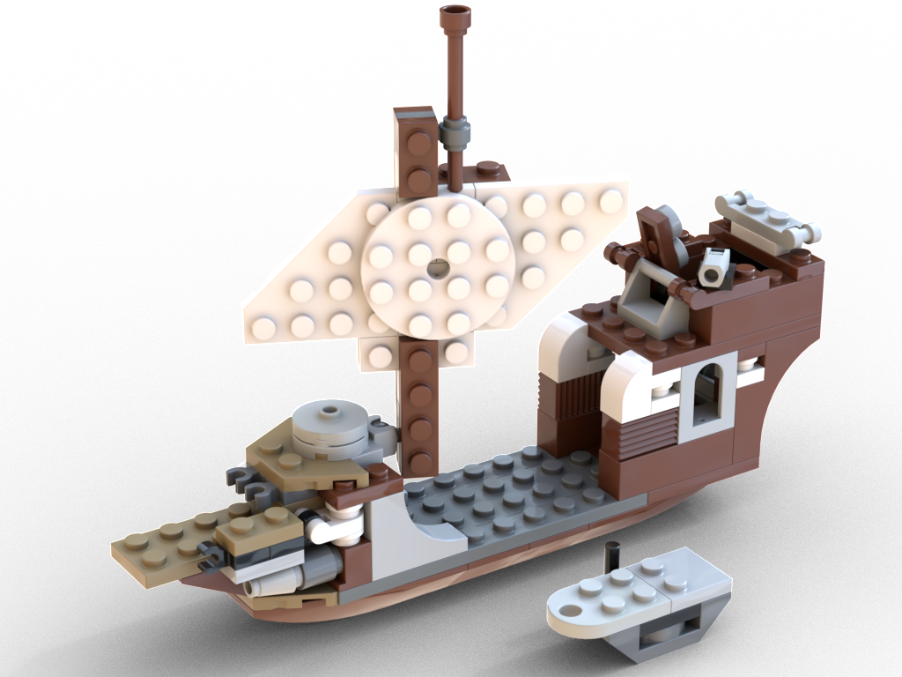
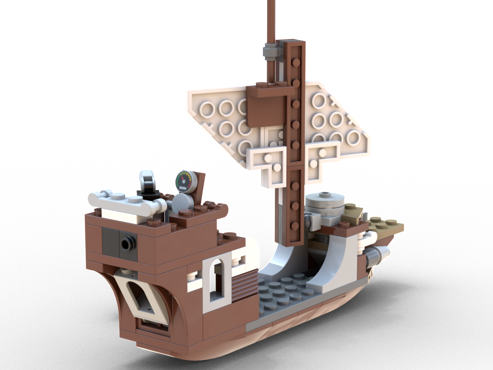
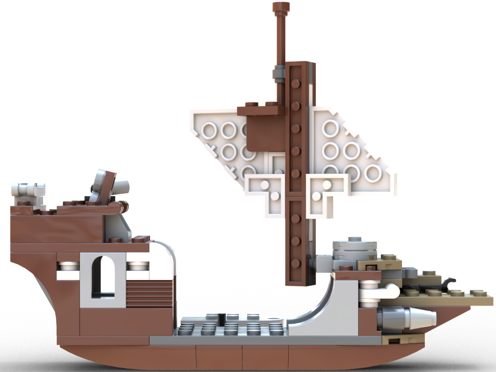
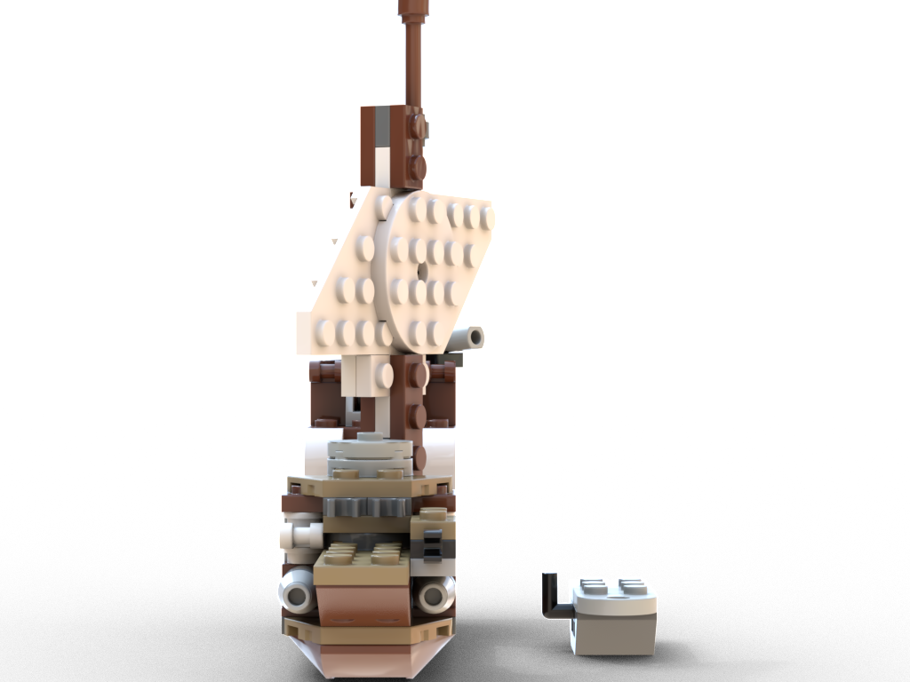
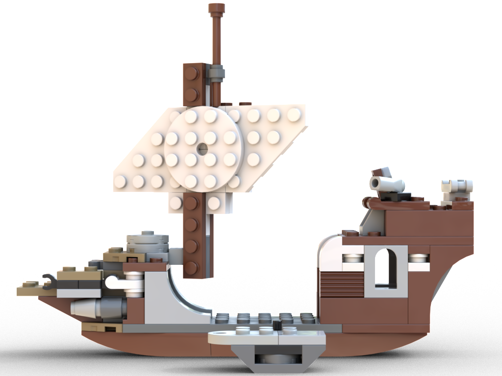
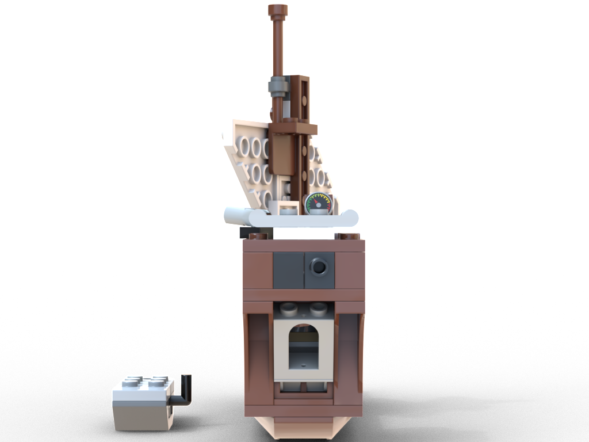
Features
- Cabin with openable rear window
- Small cabin in the front
- Dinghy which can be towed or stored on the rear pin
- Center plate can be opened/removed. It may serve as a plank or connection to the dinghy
- Mast with sail and a crow's nest
- Two front cannons, one small cannon
- Storage space for minifigure gear
- Small crane pole that can be connected and rotated on various connection points
- Can be built at the same time as the Modular Rockets using the 60th anniversary parts
- 109 parts, 64 distinct parts
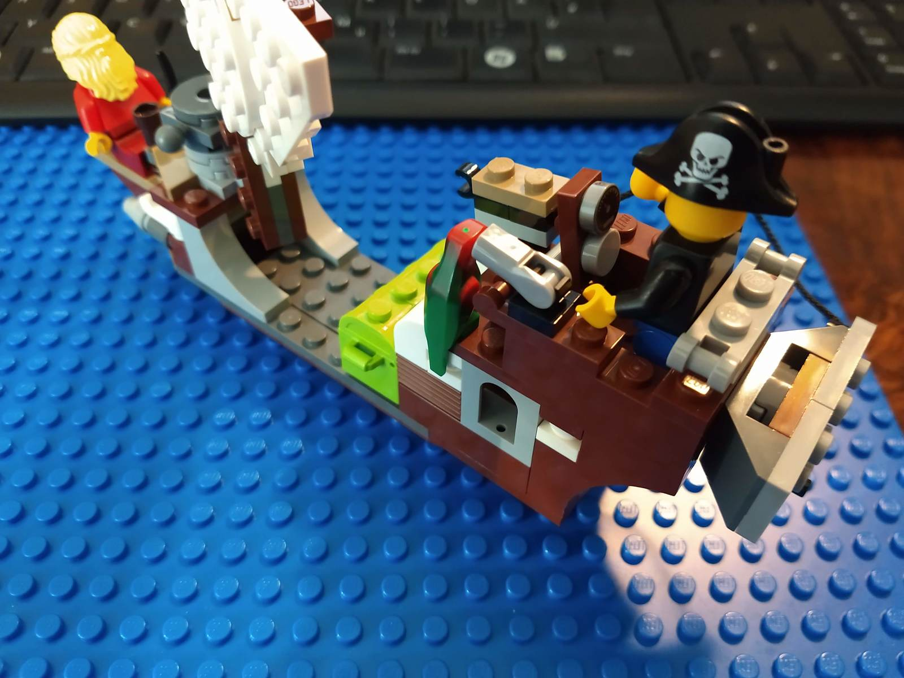
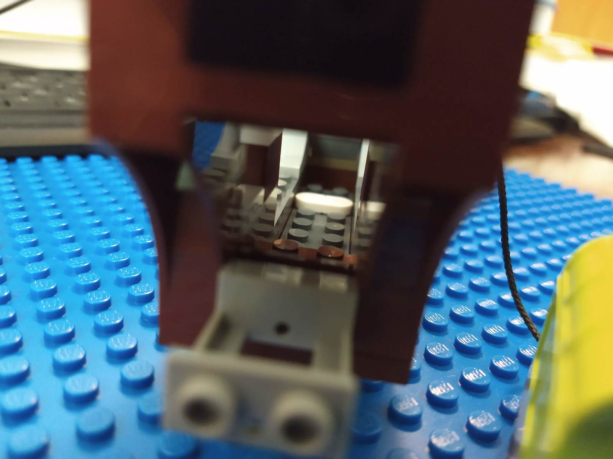
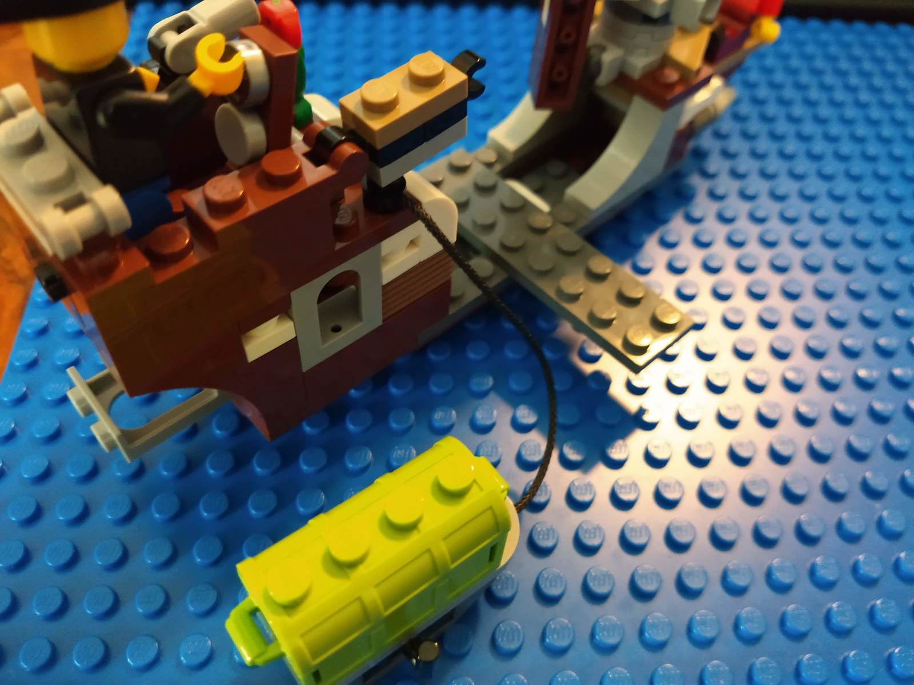
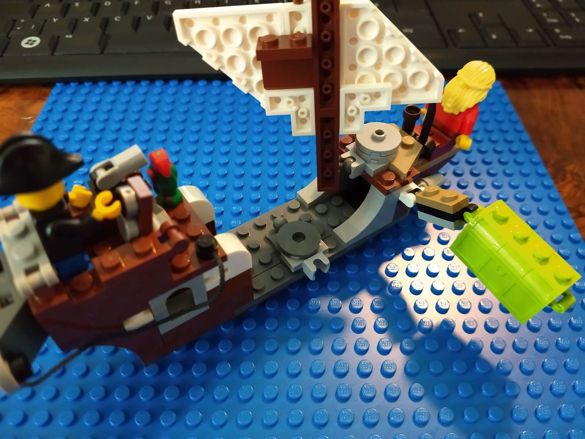
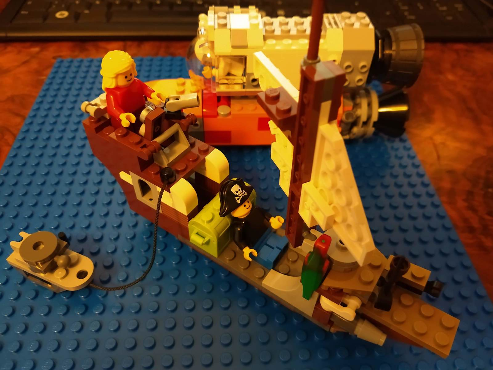